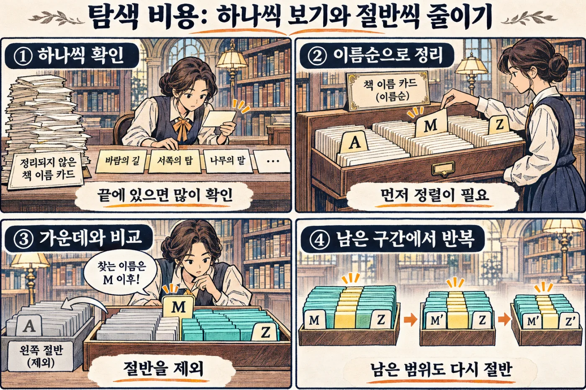

알고리즘과 비용
빠르다·느리다를 말하는 법
두꺼운 사전에서 낱말 하나를 찾는다고 해 봅시다. 첫 장부터 한 장씩 넘기면 한참 걸립니다. 가운데를 펼쳐 앞쪽인지 뒤쪽인지 보고 반씩 줄여 가면 금방 찾습니다. 같은 일인데 방법에 따라 걸리는 시간이 이렇게 다릅니다. 문제를 푸는 방법을 알고리즘이라고 합니다. 이 장에서는 어떤 방법이 빠른지 미리 알아보는 법을 배웁니다.
- 알고리즘이 무엇인지 말할 수 있습니다.
- 데이터가 많아질 때 일이 얼마나 늘어나는지 어림할 수 있습니다.
- 하나씩 찾기와 반씩 줄여 찾기의 차이를 설명할 수 있습니다.
- 지도에서 가장 빠른 길을 찾는 방법을 설명할 수 있습니다.
9.1알고리즘: 같은 문제를 푸는 서로 다른 길#
도서관 서가 한 줄에 책 15권이 번호순으로 꽂혀 있습니다. 여기서 63번 책을 찾아봅시다.
첫째 방법은 왼쪽 끝에서부터 한 권씩 번호를 확인하는 것입니다. 둘째 방법은 한가운데 책부터 보는 것입니다. 가운데 책이 35번이면 63번은 그 오른쪽에 있을 수밖에 없습니다. 왼쪽 절반은 열어 보지도 않고 버립니다. 남은 절반에서 다시 가운데를 봅니다.
이렇게 문제를 푸는 절차, 곧 무엇을 어떤 순서로 할지 정해 둔 방법을 알고리즘(algorithm)이라고 합니다. 8장의 자료구조가 데이터를 담는 그릇이라면, 알고리즘은 그 그릇을 가지고 일하는 순서입니다. 두 방법에는 이름이 있습니다.
- 선형 탐색(linear search)은 처음부터 하나씩 확인합니다. 준비가 필요 없지만 운이 나쁘면 끝까지 다 봅니다.
- 이진 탐색(binary search)은 가운데를 보고 절반을 버리는 일을 되풀이합니다. 빠르지만 데이터가 정렬되어 있어야만 쓸 수 있습니다.

두 방법 모두 정답을 찾습니다. 차이는 거기까지 드는 일의 양이고, 책이 늘어날수록 이 차이는 크게 벌어집니다.
9.2초가 아니라 걸음 수로 잽니다#
"이 코드는 0.2초 걸려요"라는 말은 생각보다 쓸모가 없습니다. 내 노트북에서 0.2초인 코드가 낡은 휴대폰에서는 2초일 수 있습니다. 더 큰 문제는 데이터입니다. 책 15권으로 잰 시간은 책 100만 권일 때의 시간을 알려 주지 않습니다.
그래서 시간 대신 걸음 수를 셉니다. 책 한 권의 번호를 확인하는 일을 한 걸음으로 치고, 데이터의 개수는 n이라고 부릅니다. 그리고 이렇게 묻습니다. n이 커지면 걸음 수는 어떻게 늘어나는가? 가장 운이 나쁠 때를 기준으로 세어 봅시다.
| 책의 수 n | 선형 탐색 | 이진 탐색 |
|---|---|---|
| 15 | 15걸음 | 4걸음 |
| 1,000 | 1,000걸음 | 10걸음 |
| 1,000,000 | 1,000,000걸음 | 20걸음 |
선형 탐색은 책이 천 배가 되면 걸음도 천 배가 됩니다. 이진 탐색은 책이 천 배가 되어도 겨우 열 걸음이 늘 뿐입니다. 한 걸음마다 남은 책이 절반으로 줄기 때문입니다.
"n을 몇 번 반으로 줄이면 1이 되는가"라는 횟수가 로그(logarithm)입니다. 이라 쓰고 "로그 2의 n"이라고 읽습니다. 뒤집어 말하면 2를 몇 번 곱해야 n이 되는지입니다. 2를 10번 곱하면 1,024이므로 1,024의 로그는 10이고, 100만의 로그는 약 20입니다. 로그는 n이 엄청나게 커져도 아주 조금만 커집니다.
알고리즘의 빠르기는 '몇 초'가 아니라 데이터가 늘 때 걸음 수가 늘어나는 모양으로 말합니다.
9.3빅오: 늘어나는 모양에 붙인 이름표#
걸음 수가 늘어나는 모양을 짧게 적는 약속이 빅오 표기(Big-O notation)입니다. 대문자 O 뒤의 괄호 안에, 걸음 수가 n의 무엇에 비례해 늘어나는지 적습니다. 선형 탐색은 O(n), 이진 탐색은 O(log n)입니다. "오 엔", "오 로그 엔"이라고 읽습니다.
자주 만나는 모양은 다섯 가지입니다. 앞의 셋은 8장에서 "한 번에 찾는다", "절반씩 줄인다", "하나씩 다 본다"라고 불렀던 것입니다.
- O(1): 데이터가 늘어도 그대로입니다. 배열에서 번호로 꺼내기, 해시 맵에서 키로 찾기.
- O(log n): 절반씩 줄입니다. 이진 탐색.
- O(n): 하나씩 다 봅니다. 선형 탐색, 합계 구하기.
- O(n log n): 잘 만든 정렬.
- O(n²): 모든 것을 모든 것과 짝짓습니다. 반복문 안의 반복문.
| 빅오 | n = 10 | n = 1,000 | n = 100만 |
|---|---|---|---|
| O(1) | 1 | 1 | 1 |
| O(log n) | 약 3 | 약 10 | 약 20 |
| O(n) | 10 | 1,000 | 100만 |
| O(n log n) | 약 33 | 약 1만 | 약 2,000만 |
| O(n²) | 100 | 100만 | 1조 |
n이 10일 때는 무엇을 쓰든 금방 끝납니다. 차이는 n이 커질 때 드러납니다. 1초에 1억 걸음을 걷는 컴퓨터라면 n이 100만일 때 O(n)은 0.01초, O(n log n)은 0.2초에 끝납니다. O(n²)은 1조 걸음이라 세 시간 가까이 걸립니다.
빅오는 모양만 남기고 자잘한 것은 버립니다. 걸음 수가 3n + 5든 n ÷ 2든 모두 O(n)입니다. 그래서 빅오는 실제 시간이 아닙니다. 데이터가 수십 개뿐이면 O(n²)인 단순한 코드가 더 빠를 수도 있습니다.
한 걸음 더가장 좋을 때, 평균, 가장 나쁠 때
선형 탐색에서 찾는 책이 맨 앞에 있으면 한 걸음에 끝납니다. 맨 끝에 있거나 아예 없으면 n걸음입니다. 고르게 섞여 있다면 평균은 n의 절반쯤입니다.
빅오는 보통 가장 나쁠 때를 말합니다. 약속에 늦지 않으려면 길이 가장 막힐 때를 기준으로 집을 나서는 것과 같습니다. 다만 해시 맵의 O(1)은 평균입니다. 키가 한 서랍에 몰리면 O(n)까지 느려질 수 있습니다.
9.4이중 반복문: 걸음이 곱해지는 순간#
O(n²)은 어디서 생길까요? 가장 흔한 곳은 반복문 안의 반복문입니다. 도서관에서 오늘 방문한 사람 가운데 연체자가 있는지 확인해 봅시다.
late = [23, 5, 61, 8, 90, 77] # 연체 회원 번호
visitors = [17, 42, 8, 23, 35, 4] # 오늘 방문자
for v in visitors:
if v in late: # 명단을 처음부터 훑는다
print(v, "번 회원은 연체 중")- 3행: 방문자를 한 명씩 꺼냅니다. 반복문은 이것 하나뿐인 것처럼 보입니다.
- 4행:
late는 리스트입니다. 리스트에in을 쓰면 처음부터 하나씩 다 봅니다. 눈에 보이지 않는 숨은 반복문입니다.
방문자 한 명마다 명단 전체를 훑으니 걸음 수는 방문자 수 × 명단 길이입니다. 100명씩이면 1만 걸음, 1만 명씩이면 1억 걸음입니다. 사람은 100배 늘었는데 일은 1만 배 늘었습니다.
고치는 방법은 8장에서 배웠습니다. 명단을 집합에 담으면 "이 번호가 있나?"에 한 번에 답합니다. 첫 줄 하나만 바꾸면 됩니다.
late = {23, 5, 61, 8, 90, 77} # 리스트 대신 집합집합을 만드는 데 1만 걸음, 방문자를 확인하는 데 1만 걸음, 합쳐서 2만 걸음입니다. 1억이 2만으로 줄었습니다. O(n²)이 O(n)이 된 것입니다.
공짜는 아닙니다. 집합은 리스트보다 메모리를 더 씁니다. 도서관이 책과 따로 찾아보기 카드함을 두는 것과 같습니다. 놓을 자리와 만드는 수고가 들지만, 한 번 만들어 두면 찾을 때마다 덕을 봅니다. 이렇게 메모리를 더 써서 시간을 아끼거나 그 반대로 하는 맞바꿈을 시간과 공간의 교환(time-space tradeoff)이라고 합니다.
반복문 안에 x in 리스트, 리스트.index(x), 리스트.count(x), 정렬이 들어 있으면 의심하세요. AI가 만든 코드에도 자주 나오는데, 데이터가 적을 때는 티가 나지 않습니다.
9.5정렬: 줄을 세워 두면 생기는 힘#
이진 탐색은 책이 번호순으로 꽂혀 있었기에 가능했습니다. 이렇게 정해 둔 기준에 따라 차례로 늘어놓는 일이 정렬(sorting)입니다. 정렬해 두면 빨리 찾을 수 있고, 순위표나 최신순 목록을 보여 줄 수 있고, 같은 것끼리 이웃해서 중복도 쉽게 눈에 띕니다.
정렬 자체에는 일이 얼마나 들까요? 가장 작은 카드를 찾아 맨 앞에 놓고, 남은 카드에서 또 가장 작은 것을 찾는 방법이 먼저 떠오릅니다. 찾을 때마다 남은 카드를 다 봐야 하니 O(n²)입니다. 더 나은 방법인 병합 정렬(merge sort)은 이렇게 합니다.
- 카드를 낱장이 될 때까지 반으로 나눕니다.
- 이웃한 두 묶음을 하나로 합칩니다. 두 묶음은 이미 정렬되어 있으므로 맨 앞 카드끼리만 비교해 작은 쪽부터 내려놓으면 됩니다.
- 한 묶음이 될 때까지 2를 되풀이합니다.
걸음 수를 세어 봅시다. 한 층에서 카드 n장을 한 번씩 옮깁니다. 층의 수는 묶음이 두 배씩 커져 n에 닿는 횟수이니 입니다. 곱하면 n × log n, 그래서 O(n log n)입니다. 카드 100만 장이면 100만 × 20 = 2,000만 걸음입니다. O(n²)의 1조 걸음보다 5만 배 적습니다.
직접 짜지 말고, 기준을 정확히 알려 주기
정렬을 직접 만들 일은 거의 없습니다. 언어마다 잘 만든 정렬 함수가 있습니다. 우리 몫은 무엇을 기준으로 줄 세울지 알려 주는 것이고, 버그는 대부분 여기서 생깁니다.
players = [("민지", 90), ("준호", 85), ("서연", 90)]
def score(p):
return p[1] # 항목에서 점수만 꺼낸다
sorted(players, key=score, reverse=True)
# [('민지', 90), ('서연', 90), ('준호', 85)]- 6행:
key가 줄 세우는 기준이고,reverse=True는 큰 것부터 놓으라는 뜻입니다. - 7행: 민지와 서연은 둘 다 90점입니다. 결과에서도 원래 순서대로 민지가 앞입니다.
기준이 같은 것끼리 원래 순서를 지켜 주는 정렬을 안정 정렬(stable sort)이라고 합니다. Python의 정렬이 그렇습니다. 그래도 동점일 때의 순서가 중요하다면 "점수가 같으면 회원 번호순"처럼 둘째 기준까지 적어 두세요. 목록을 여러 쪽으로 나눠 보여 줄 때 동점자의 순서가 흔들리면 같은 사람이 두 번 나오거나 빠집니다.
글자는 앞 글자부터 비교합니다. 그래서 문자열 "10"은 "2"보다 앞에 옵니다. JavaScript의 [10, 9, 1].sort()는 숫자도 글자로 바꿔 비교해서 결과가 [1, 10, 9]입니다. 숫자는 숫자로 비교하도록 기준을 꼭 알려 주세요.
9.6가끔만 비싼 일: 상각 비용#
8장에서 동적 배열은 칸이 다 차면 더 넓은 자리로 통째로 이사한다고 했습니다. 이사는 있던 값을 전부 옮기는 O(n)짜리 일입니다. 그런데도 "끝에 붙이기는 빠르다"고 말해도 될까요?
책장으로 세어 봅시다. 한 칸짜리 책장에서 시작해, 꽉 찰 때마다 두 배 큰 책장으로 책을 모두 옮깁니다.
9권을 꽂는 동안 이사한 책은 1 + 2 + 4 + 8 = 15권입니다. 꽂기 9걸음과 합치면 24걸음이니 한 권에 평균 3걸음이 안 됩니다. 책이 1,000권으로 늘어도 이 평균은 그대로입니다. 책장이 커질수록 이사는 비싸지지만 그만큼 드물어지기 때문입니다.
반대로 책장을 한 칸씩만 늘리면 꽂을 때마다 이사합니다. 9권에 36권, 1,000권이면 약 50만 권을 옮겨야 합니다. O(n²)입니다.
가끔 드는 큰 비용을 여러 번에 고르게 나눠 본 값을 상각 비용(amortized cost)이라고 합니다. 동적 배열의 끝에 붙이기는 "상각 O(1)"입니다. 실제로 몇 배씩 늘리는지는 언어마다 다르지만, 일정한 비율로 늘리는 한 결론은 같습니다.
상각 O(1)은 "합쳐 보면 싸다"는 뜻입니다. 이사가 일어나는 그 한 번은 여전히 O(n)이어서, 1초에 60번 화면을 그리는 게임에서는 화면이 뚝 끊길 수 있습니다. 필요한 크기를 미리 안다면 처음부터 넉넉히 잡아 둡니다.
9.7길 찾기: 물결처럼, 한 길로, 가장 싼 길로#
8장의 그래프는 "누가 누구와 이어져 있나"를 담는 그릇이었습니다. 이제 그 위를 걸어 봅시다. 칸으로 나뉜 지도에서 집에서 도서관까지 가는 길을 찾습니다. 한 번에 위아래나 좌우의 이웃 칸으로 한 걸음 갈 수 있습니다.
- 너비 우선 탐색(BFS, Breadth-First Search)은 연못에 돌을 던졌을 때의 물결처럼 퍼집니다. 출발점에서 한 걸음 거리의 칸을 모두 보고, 그다음 두 걸음 거리의 칸을 모두 봅니다.
- 깊이 우선 탐색(DFS, Depth-First Search)은 미로에서 한쪽 벽을 짚고 걷는 것과 같습니다. 한 길로 갈 수 있는 데까지 가고, 막히면 마지막 갈림길로 돌아와 다른 길로 갑니다.
BFS는 가까운 곳부터 차례로 보기 때문에, 도착점에 처음 닿은 길이 곧 걸음 수가 가장 적은 길입니다. DFS가 찾은 길에는 그런 보장이 없습니다. 대신 DFS는 "이 폴더 아래의 파일을 모두 찾기"처럼 끝까지 따라가 봐야 하는 일에 잘 맞습니다.
두 방법의 차이는 다음에 갈 칸을 어디서 꺼내느냐뿐입니다. 새로 발견한 칸을 큐에 넣고 먼저 넣은 것부터 꺼내면 BFS, 스택에 넣고 방금 넣은 것부터 꺼내면 DFS입니다. 어느 쪽이든 들른 칸을 집합에 적어 두어야 같은 곳을 맴돌지 않습니다. 그러면 칸마다 한 번씩만 들르므로 걸음 수는 지도 크기에 비례합니다.
길마다 걸리는 시간이 다르다면: 다익스트라
BFS는 모든 걸음의 값이 같다고 봅니다. 하지만 실제 길은 구간마다 걸리는 시간이 다릅니다. 두 구간짜리 큰길보다 세 구간짜리 지름길이 빠를 수 있습니다. 이럴 때 쓰는 방법이 다익스트라 알고리즘(Dijkstra's algorithm)입니다.
곳마다 "지금까지 알아낸 가장 빠른 시간"을 적어 두고, 다음 두 가지를 되풀이합니다.
- 아직 확정하지 않은 곳 가운데 기록이 가장 작은 곳을 골라 확정합니다.
- 그곳을 거쳐 이웃으로 가는 시간이 이웃의 기록보다 짧으면 기록을 고칩니다.
시장까지 4분이라는 첫 기록을 그대로 믿었다면 틀렸을 것입니다. 처음 발견한 길이 가장 빠른 길은 아닙니다. 반대로 1번에서 고른 곳은 믿어도 됩니다. 남은 곳은 모두 그보다 멀어서, 그쪽으로 돌아오는 길이 더 빠를 수 없기 때문입니다. 이 논리는 걸리는 시간이 음수인 길이 없을 때만 성립합니다. 기록이 가장 작은 곳을 꺼내는 일에는 8장의 힙이 제격입니다.
걸음 수가 가장 적은 길은 BFS, 걸리는 시간의 합이 가장 작은 길은 다익스트라입니다.
한 걸음 더목적지 쪽부터 보기: A*와 휴리스틱
다익스트라는 목적지가 어느 쪽인지 모른 채 사방으로 퍼집니다. 게임 캐릭터의 길 찾기처럼 목적지가 정해져 있다면 A* 탐색(에이 스타)이 더 적게 둘러봅니다.
A*는 "여기까지 온 시간"에 "여기서 목적지까지 남은 시간의 어림값"을 더해, 그 합이 작은 곳부터 봅니다. 이 어림값을 휴리스틱(heuristic)이라고 합니다. 칸으로 된 지도에서는 벽을 무시하고 "가로로 남은 칸 수 + 세로로 남은 칸 수"를 흔히 씁니다.
조건이 하나 있습니다. 어림값이 실제 남은 시간보다 크면 안 됩니다. 실제보다 멀다고 짐작한 길은 뒤로 밀려서, 가장 빠른 길을 놓칠 수 있습니다.
9.8경우의 수 폭발: 다 해 볼 수 없는 문제#
다익스트라는 모든 길을 다 걸어 보지 않고도 답을 찾았습니다. 만약 "가능한 경우를 전부 해 보자"고 마음먹으면 어떻게 될까요?
앱에 켜고 끄는 설정 스위치가 있습니다. 스위치가 1개면 경우는 2가지입니다. 하나를 더하면 앞의 경우마다 새 스위치를 끈 것과 켠 것으로 갈라지므로 4가지가 됩니다.
스위치 n개의 경우는 2를 n번 곱한 가지입니다. 로그의 정반대입니다. 로그는 n이 100만이 되어도 20이었는데, 이쪽은 n이 20만 되어도 100만입니다. 조합 하나를 1초에 시험한다면 스위치 20개에 약 12일, 30개에 약 34년이 걸립니다.
순서를 정하는 문제는 더 가파릅니다. 택배 기사가 10곳을 도는 순서는 10 × 9 × 8 × … × 1 = 3,628,800가지이고, 15곳이면 약 1조 3천억 가지입니다. 이렇게 순서까지 따지는 경우의 수를 순열, 로또처럼 순서 없이 고르기만 하는 경우의 수를 조합이라고 합니다. 번호 45개에서 6개를 고르는 조합만 해도 814만 가지가 넘습니다.
선택지가 곱해져서 경우의 수가 감당 못 하게 불어나는 현상을 조합 폭발(combinatorial explosion)이라고 합니다. 더 빠른 컴퓨터로는 풀리지 않습니다. 컴퓨터가 두 배 빨라져 봐야 스위치 하나를 더 감당할 뿐입니다.
그래서 이런 문제에서는 다 해 보지 않는 방법을 찾습니다. 안 될 것이 분명한 갈래는 일찍 버리고, 전체 대신 대표적인 경우만 고르고, 완벽한 답 대신 충분히 좋은 답에서 멈춥니다. AI에게 "모든 조합을 테스트해 줘"라고 하기 전에, 그 모든 조합이 몇 개인지부터 곱해 보세요.
9.9조금씩 처리하기: 메모리도 비용입니다#
지금까지는 걸음 수, 곧 시간만 셌습니다. 알고리즘의 비용에는 하나가 더 있습니다. 일하는 동안 조리대(메모리)를 얼마나 차지하느냐입니다. 이것도 빅오로 말합니다. 데이터 n개를 전부 메모리에 올리면 O(n), 데이터가 아무리 많아도 값 몇 개만 들고 있으면 O(1)입니다.
서버 로그 파일에서 "ERROR"가 들어간 줄을 세어 봅시다. 파일은 1,000만 줄이고 한 줄이 1KB쯤이라 전체가 약 10GB입니다. f.readlines()로 모든 줄을 한꺼번에 읽으면 10GB가 통째로 조리대에 올라옵니다. 메모리가 8GB인 노트북은 버티지 못합니다.
한 줄씩 읽는 코드는 이렇습니다.
count = 0
with open("server.log") as f:
for line in f: # 한 번에 한 줄만 메모리에
if "ERROR" in line:
count += 1- 3행: 파일
f를for에 넣으면 전체를 읽어 두지 않고, 달라고 할 때마다 다음 한 줄을 내줍니다. - 5행: 기억하는 것은 숫자
count하나뿐입니다. 지나간 줄은 버립니다.
이렇게 "다음 것 주세요" 할 때마다 하나씩 내주는 것을 반복자(iterator)라고 합니다. 도서관 창구에서 책을 한 권씩 건네받는 것과 같습니다. 책이 몇 권 남았든 내 손에는 한 권뿐입니다. 데이터를 이처럼 조금씩 받아 조금씩 처리하는 방식이 스트리밍(streaming)입니다.
반복자를 손쉽게 만드는 도구가 제너레이터(generator)입니다. 함수 안에서 return 대신 yield를 쓰면, 값을 하나 내주고 그 자리에서 멈췄다가 다음 요청 때 이어서 실행합니다.
def error_lines(path):
with open(path) as f:
for line in f:
if "ERROR" in line:
yield line # 하나 내주고 여기서 멈춤조심할 점이 두 가지 있습니다.
- 한 번 지나가면 끝입니다. 같은 제너레이터를 두 번 돌리면 두 번째에는 아무것도 나오지 않습니다.
list()로 감싸면 도로 전부 올립니다. 결과를 몽땅 메모리에 모으므로 아낀 보람이 사라집니다.
스트리밍으로 못 하는 일도 있습니다. 개수, 합계, 최댓값은 지나가면서 구할 수 있지만, 전체를 정렬하거나 중복을 없애려면 지나간 것을 기억해야 합니다.
한 걸음 더돌면서 고치면 생기는 일
리스트를 도는 도중에 그 리스트에서 항목을 지우면 엉뚱한 결과가 나옵니다.
nums = [2, 4, 6]
for x in nums:
if x % 2 == 0:
nums.remove(x)
print(nums) # [4] — 짝수를 다 지우려 했는데 4가 남음반복자는 "지금 몇 번째 칸까지 봤다"만 기억합니다. 0번 칸의 2를 지우면 4가 0번 칸으로 당겨지는데, 반복자는 다음 차례인 1번 칸으로 넘어가 6을 봅니다. 4는 건너뛰었습니다.
해결책은 도는 일과 고치는 일을 떼어 놓는 것입니다. nums = [x for x in nums if x % 2 != 0]처럼 남길 것만 모아 새 리스트를 만듭니다.
헷갈리기 쉬운 짝#
| 짝 | 차이 |
|---|---|
| 자료구조 / 알고리즘 | 데이터를 담는 그릇 / 그 그릇으로 일하는 순서 |
| 걸린 시간(초) / 빅오 | 이 컴퓨터, 이 데이터에서 잰 값 / 데이터가 늘 때 일이 늘어나는 모양 |
| 상각 비용 / 가장 나쁜 한 번 | 여러 번을 합쳐 고르게 나눈 값 / 이사가 일어나는 그 한 번의 값 |
| BFS / 다익스트라 | 걸음 수가 가장 적은 길 / 걸리는 시간의 합이 가장 작은 길 |
| 리스트 / 제너레이터 | 전부 만들어 메모리에 올려 둠 / 달라고 할 때 하나씩 만들어 줌 |
실전 사례#
적이 100마리일 때는 부드럽던 게임입니다. 적끼리 부딪쳤는지 검사하는 코드가 의심스럽습니다.
- 걸음 수를 셉니다. 코드는 모든 적을 다른 모든 적과 짝지어 거리를 재고 있었습니다. 100마리면 4,950쌍, 1,000마리면 499,500쌍입니다. 적은 10배인데 일은 약 100배입니다.
- 모양을 확인합니다. 적을 500, 1,000, 2,000마리로 바꿔 가며 화면 한 장을 계산하는 시간을 잽니다. 적이 두 배가 될 때마다 시간이 네 배가 되면 O(n²)입니다.
- 후보를 줄입니다. 멀리 떨어진 적끼리는 부딪칠 수 없습니다. 지도를 바둑판처럼 칸으로 나누고 "칸 → 그 칸에 있는 적들" 해시 맵을 만든 뒤, 같은 칸과 이웃 칸의 적끼리만 검사합니다.
- 결과가 같은지 봅니다. 고치기 전과 후에 찾아낸 충돌이 똑같은지 비교하고, 2번의 측정을 다시 합니다.
- 가장 나쁜 경우를 떠올립니다. 적이 모두 한 칸에 몰리면 다시 모든 쌍을 검사합니다. 그런 장면이 실제로 나오는지 확인합니다.
계산 한 번을 조금 빠르게 다듬는 것보다 계산할 후보의 수를 줄이는 쪽이 훨씬 큰 차이를 만듭니다.
한눈에 정리#
- 알고리즘은 문제를 푸는 절차입니다. 빠르기는 초가 아니라, 데이터 n이 늘 때 걸음 수가 늘어나는 모양인 빅오로 말합니다.
- 로그는 절반씩 줄일 수 있는 횟수입니다. 정렬된 데이터라면 이진 탐색으로 100만 개에서도 20걸음에 찾습니다.
- 데이터 100만 개에서 O(n)은 100만 걸음, O(n log n)은 2,000만 걸음, O(n²)은 1조 걸음입니다.
- 반복문 안의 숨은 반복문이 O(n²)을 만듭니다. 집합이나 해시 맵을 미리 만들어 메모리로 시간을 삽니다.
- 정렬은 O(n log n)입니다. 직접 짜지 말고 기준과 동점일 때의 순서를 정확히 알려 줍니다.
- 걸음 수가 가장 적은 길은 BFS, 시간이 가장 짧은 길은 다익스트라, 끝까지 훑는 일은 DFS입니다.
- 경우의 수는 곱해져서 폭발합니다. 큰 데이터는 한 번에 조금씩 처리해 메모리를 아낍니다.
확인 문제#
회원 100명으로 시험할 때 0.1초 걸리던 기능이 회원 1만 명에서는 1,000초가 걸렸습니다. 데이터는 100배인데 시간은 1만 배입니다. 무엇을 의심해야 할까요?
정답 보기
O(n²)입니다. 100 × 100 = 1만 배이기 때문입니다. 반복문 안에 또 다른 반복문이나 x in 리스트 같은 숨은 반복문이 있는지 찾습니다. 안쪽에서 뒤지는 리스트를 집합이나 해시 맵으로 바꾸면 O(n)으로 줄어듭니다.
가입순으로 쌓인 회원 목록에서 이메일 하나를 딱 한 번 찾아야 합니다. AI가 "정렬한 뒤 이진 탐색을 쓰면 O(log n)이라 빠릅니다"라고 제안했습니다. 받아들여도 될까요?
정답 보기
이 경우에는 손해입니다. 이진 탐색을 하려면 먼저 O(n log n)짜리 정렬을 해야 합니다. 한 번만 찾을 거라면 O(n)인 선형 탐색이 더 쌉니다. 같은 목록에서 여러 번 찾을 때에야 정렬이나 해시 맵 같은 준비가 본전을 뽑습니다.
"리스트 끝에 붙이기는 상각 O(1)"이라고 배웠는데, 게임에서 총알을 리스트에 추가할 때 가끔 화면이 멈칫합니다. 배운 것과 어긋날까요?
정답 보기
어긋나지 않습니다. 상각 O(1)은 여러 번을 합쳐 나누면 싸다는 뜻입니다. 칸이 다 차서 이사하는 그 한 번은 값을 전부 옮기므로 O(n)입니다. 필요한 크기를 미리 잡아 두면 피할 수 있습니다.
지하철 앱에 "정거장 수가 가장 적은 길"과 "가장 빨리 도착하는 길" 두 가지 검색을 넣으려 합니다. 각각 어떤 알고리즘이 맞을까요?
정답 보기
정거장 수가 가장 적은 길은 BFS입니다. 가까운 역부터 물결처럼 퍼지므로 처음 닿은 길이 가장 짧습니다. 가장 빨리 도착하는 길은 역 사이에 걸리는 시간이 제각각이므로 다익스트라를 씁니다.
설정 스위치가 30개인 앱에서 AI에게 "모든 설정 조합을 자동으로 테스트해 줘"라고 시키려 합니다. 먼저 무엇을 계산해 봐야 할까요?
정답 보기
조합의 수입니다. 2를 30번 곱하면 약 10억이고, 하나를 1초에 시험해도 34년쯤 걸립니다. 모든 조합 대신 스위치를 하나씩만 바꾼 경우와 서로 영향을 줄 만한 스위치 쌍처럼, 대표적인 경우를 골라 달라고 해야 합니다.
AI에게 맡길 때#
AI 코딩 도구에게 느린 코드를 맡길 때는 "빠르게 해 줘"보다 걸음 수가 어떻게 늘어나는지부터 설명하게 하세요.
이 함수가 주문 10만 건에서 너무 느려. 고치기 전에 먼저, 입력 크기 n이 무엇이고 지금 코드가 빅오로 얼마인지를 원인이 되는 줄과 함께 설명해 줘. 그다음 더 나은 방법을 제안하고, 그 방법이 메모리를 얼마나 더 쓰는지도 알려 줘. 완료 기준: 작은 입력에서 고치기 전과 후의 결과가 같다는 테스트, 그리고 n이 1천, 1만, 10만일 때의 실행 시간과 최대 메모리를 잰 표.
받은 답에서 확인할 것: 반복문 안에 숨은 반복문(in 리스트, .index(), 정렬)이 남아 있지 않은가, n을 10배 늘렸을 때 시간이 몇 배가 되는지 실제로 쟀는가, 메모리는 얼마나 늘었는가, 정렬을 썼다면 기준과 동점일 때의 순서가 적혀 있는가.
용어 정리#
- 알고리즘algorithm
- 문제를 푸는 절차. 무엇을 어떤 순서로 할지 정해 둔 방법.
- 빅오 표기Big-O notation
- 데이터 개수 n이 커질 때 걸음 수나 메모리가 늘어나는 모양을 O(n)처럼 적는 약속.
- 로그logarithm
- n을 몇 번 반으로 줄이면 1이 되는지를 나타내는 수. 100만의 로그는 약 20.
- 선형 탐색linear search
- 처음부터 하나씩 확인하며 찾는 방법. O(n).
- 이진 탐색binary search
- 정렬된 데이터에서 가운데를 보고 절반씩 버리며 찾는 방법. O(log n).
- 시간과 공간의 교환time-space tradeoff
- 메모리를 더 써서 시간을 아끼거나 그 반대로 하는 맞바꿈.
- 병합 정렬merge sort
- 반으로 나눈 뒤 정렬된 묶음끼리 합쳐 가는 정렬 방법. O(n log n).
- 안정 정렬stable sort
- 기준이 같은 항목끼리는 원래 순서를 지켜 주는 정렬.
- 상각 비용amortized cost
- 가끔 드는 큰 비용을 여러 번에 고르게 나눠 본 값.
- 너비 우선 탐색BFS, Breadth-First Search
- 출발점에서 가까운 곳부터 차례로 넓혀 가는 탐색. 큐를 쓴다.
- 깊이 우선 탐색DFS, Depth-First Search
- 한 길로 끝까지 갔다가 막히면 되돌아오는 탐색. 스택을 쓴다.
- 다익스트라 알고리즘Dijkstra's algorithm
- 구간마다 비용이 다른 지도에서 비용의 합이 가장 작은 길을 찾는 방법.
- 조합 폭발combinatorial explosion
- 선택지가 곱해져 경우의 수가 감당 못 하게 불어나는 현상.
- 반복자iterator
- 요청할 때마다 다음 값을 하나씩 내주는 것.
- 제너레이터generator
-
yield로 값을 하나씩 만들어 내주는 함수. 요청받은 만큼만 계산한다. - 스트리밍streaming
- 데이터를 한꺼번에 올리지 않고 조금씩 읽어 조금씩 처리하는 방식.
더 읽을거리#
- Python — Sorting Techniques — 정렬 기준(
key)을 주는 법, 안정 정렬,sort와sorted의 차이를 다룹니다. - Python bisect — 정렬된 리스트에서 이진 탐색으로 위치를 찾는 표준 도구입니다.
- Red Blob Games — Introduction to A* — BFS, 다익스트라, A*가 지도 위에서 퍼져 나가는 모습을 움직이는 그림으로 보여 줍니다.
- Python Tutorial — Iterators and Generators — 9.8절과 9.9절에서 반복자와
yield를 설명합니다.